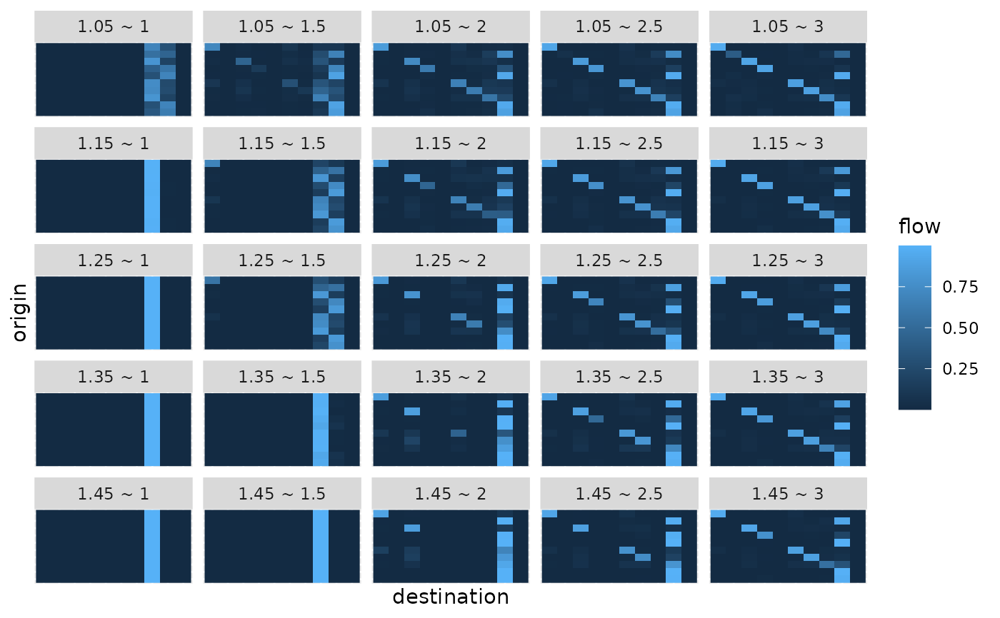
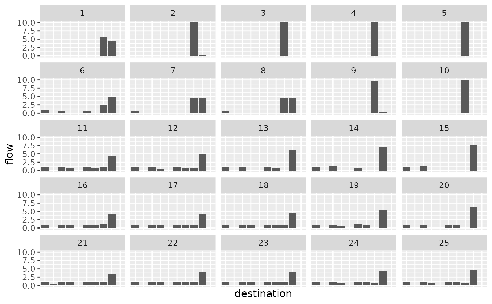
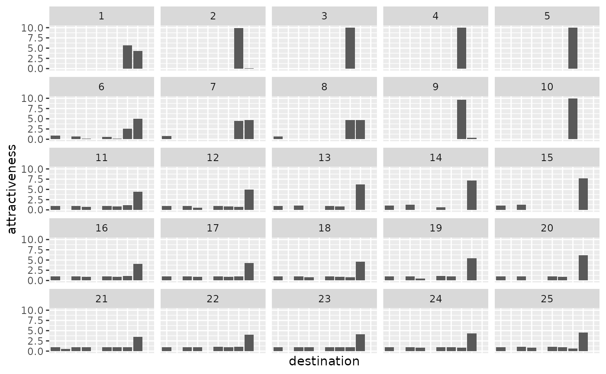
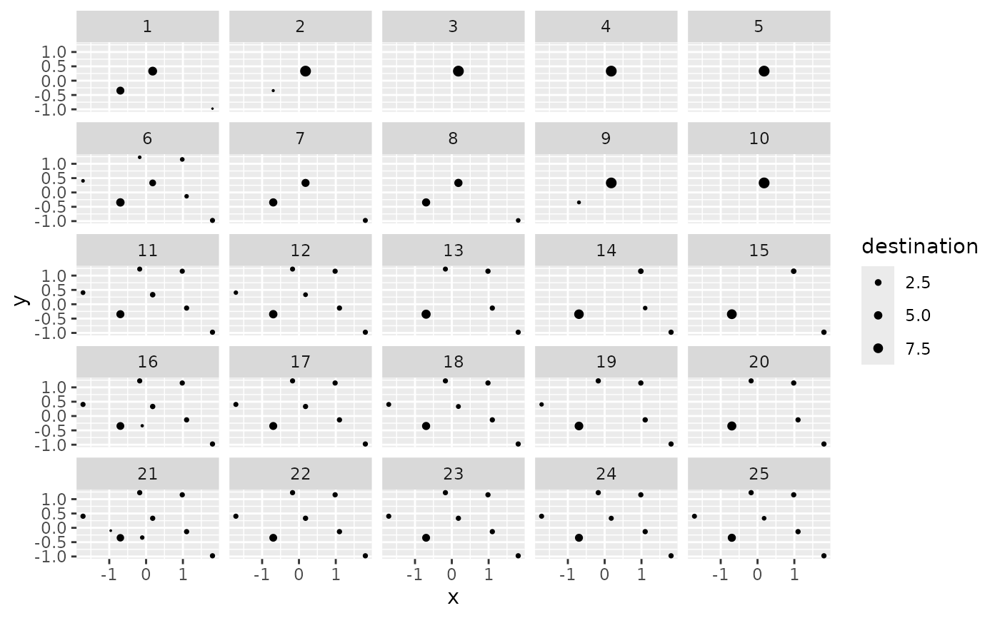
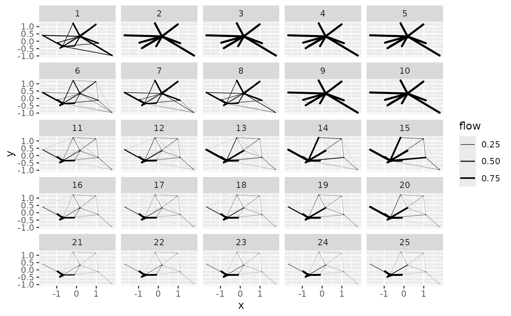
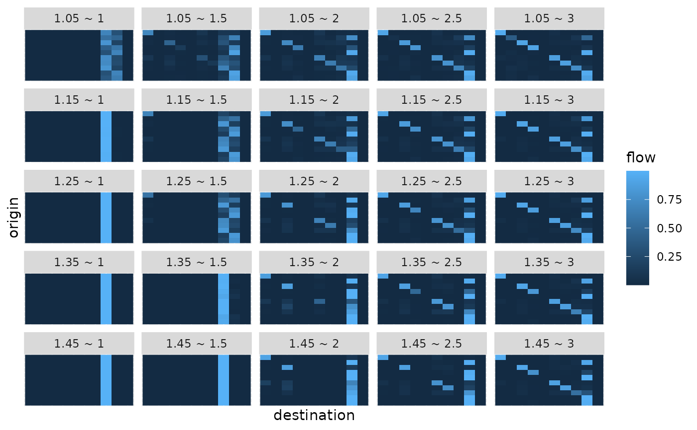
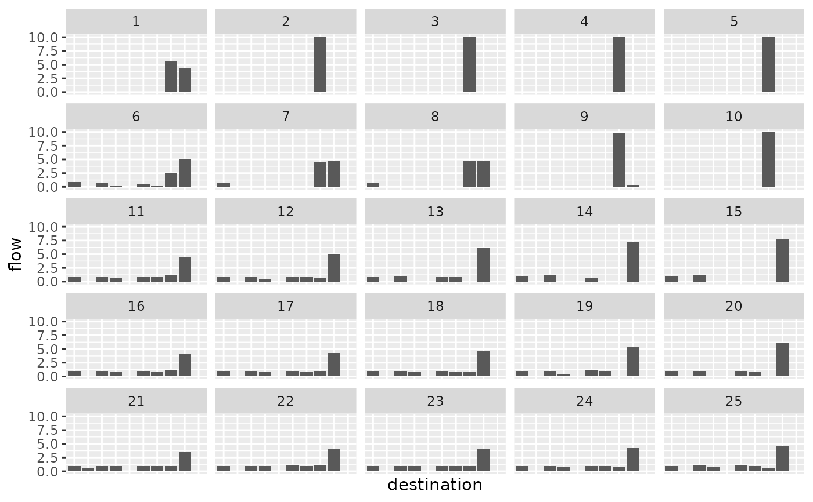
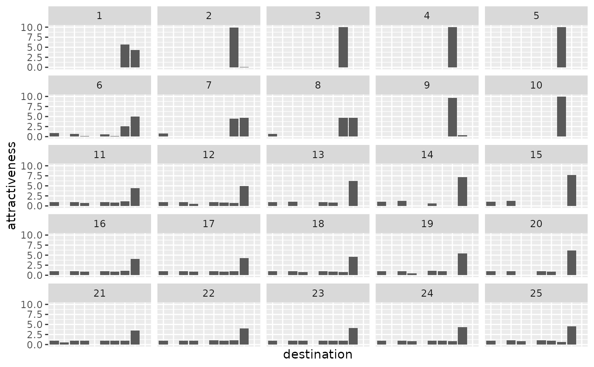
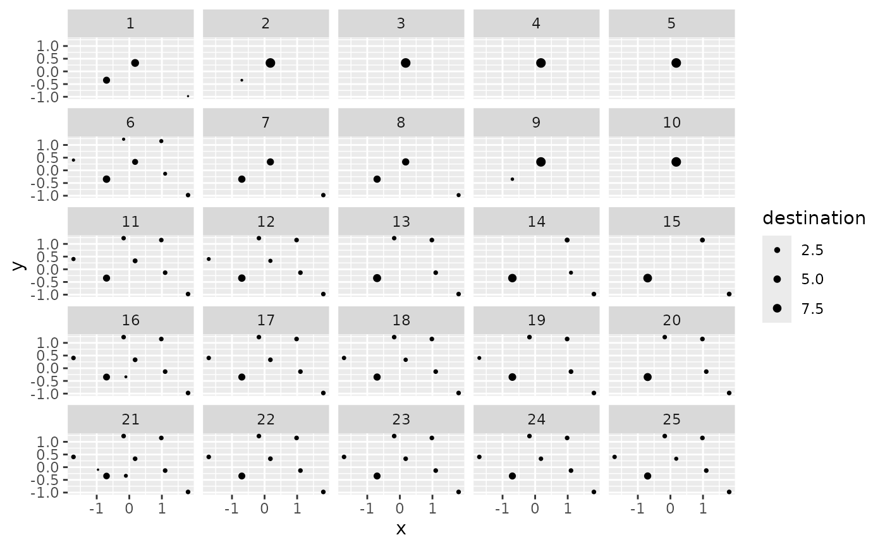
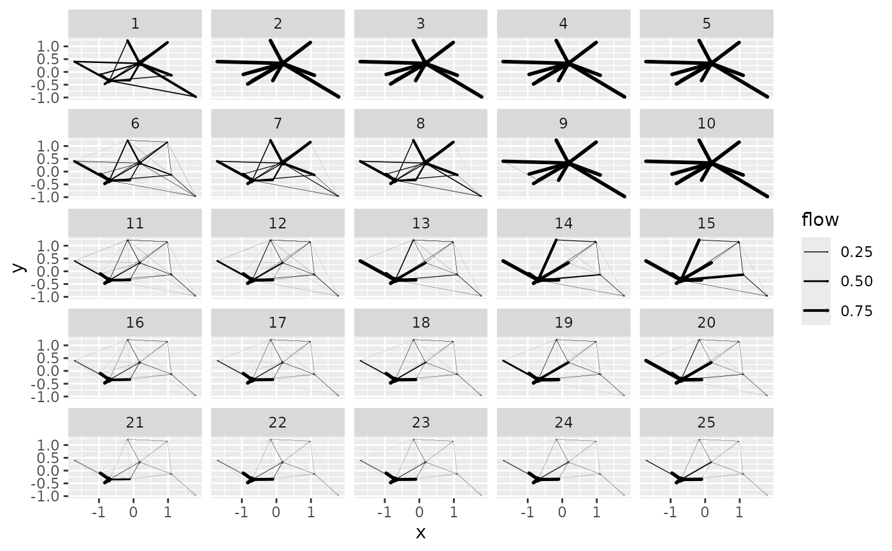

Create a complete ggplot for spatial interaction models in a data frame
Source:R/sim_df_grid_autoplot.R
grid_autoplot.RdThis function combines spatial interaction model representations similar to
the ones produced by autoplot.sim() into a single ggplot. It provides an
alternative graphical representation to the one produced by
autoplot.sim_df() for collection of spatial interaction models in a
sim_df object.
Usage
grid_autoplot(
sim_df,
key,
flows = c("full", "destination", "attractiveness"),
with_names = FALSE,
with_positions = FALSE,
cut_off = 100 * .Machine$double.eps^0.5,
adjust_limits = FALSE,
max_sims = 25,
...
)Arguments
- sim_df
a data frame of spatial interaction models, an object of class
sim_df- key
the wrapping variable which acts as an identifier for spatial interaction models
- flows
"full"(default),"destination"or"attractiveness", see details.- with_names
specifies whether the graphical representation includes location names (
FALSEby default)- with_positions
specifies whether the graphical representation is based on location positions (
FALSEby default)- cut_off
cut off limit for inclusion of a graphical primitive when
with_positions = TRUE. In the full flow matrix representation, segments are removed when their flow is smaller than the cut off. In the attractiveness or destination representation, disks are removed when the corresponding value is below the cut off.- adjust_limits
if
FALSE(default value), the limits of the position based graph are not adjusted after removing graphical primitives. This eases comparison between graphical representations with different cut off value. IfTRUE, limits are adjusted to the data using the standard ggplot2 behaviour.- max_sims
the maximum number of spatial interaction models allowed in the
sim_dfdata frame- ...
additional parameters, see details in
autoplot.sim()
Details
The rationale of autoplot.sim_df() is to display a single value for each
spatial interaction model (SIM) in the sim_df data frame. On the contrary,
this function produces a full graphical representation of each SIM. It is
therefore limited to small collection of SIMs (as specified by the max_sims
parameter which default to 25).
Under the hood, the function uses fortify.sim() and shares code with
autoplot.sim() to have identical representations. It is simply based on
facet wrapping facility of ggplot2. In particular the key parameter is used
as the wrapping variable in the call to ggplot2::facet_wrap(). If not
specified, the function generates an id variable which ranges from 1 to the
number of SIMs in the sim_df data frame. If specified, it is evaluated in
the context of the data frame and used for wrapping. Notice that if the
expression evaluates to identical values for different SIMs, they will be
drawn on the same panel of the final figure, which may end up with
meaningless representations.
Examples
positions <- matrix(rnorm(10 * 2), ncol = 2)
distances <- as.matrix(dist(positions))
production <- rep(1, 10)
attractiveness <- c(2, rep(1, 9))
all_flows <- grid_blvim(distances, production, seq(1.05, 1.45, by = 0.1),
seq(1, 3, by = 0.5),
attractiveness,
bipartite = FALSE,
epsilon = 0.1, iter_max = 1000,
destination_data = list(names = LETTERS[1:10], positions = positions),
origin_data = list(names = LETTERS[1:10], positions = positions),
)
all_flows_df <- sim_df(all_flows)
## default display: flows as matrices
grid_autoplot(all_flows_df)
 ## custom wrapping variable
grid_autoplot(all_flows_df, paste(alpha, "~", beta))

## bar plots
grid_autoplot(all_flows_df, flows = "destination")

grid_autoplot(all_flows_df, flows = "attractiveness")

## with positions
grid_autoplot(all_flows_df, flows = "destination", with_positions = TRUE) +
ggplot2::scale_size_continuous(range = c(0, 2))

grid_autoplot(all_flows_df, with_positions = TRUE) +
ggplot2::scale_linewidth_continuous(range = c(0, 1))

## custom wrapping variable
grid_autoplot(all_flows_df, paste(alpha, "~", beta))

## bar plots
grid_autoplot(all_flows_df, flows = "destination")

grid_autoplot(all_flows_df, flows = "attractiveness")

## with positions
grid_autoplot(all_flows_df, flows = "destination", with_positions = TRUE) +
ggplot2::scale_size_continuous(range = c(0, 2))

grid_autoplot(all_flows_df, with_positions = TRUE) +
ggplot2::scale_linewidth_continuous(range = c(0, 1))
